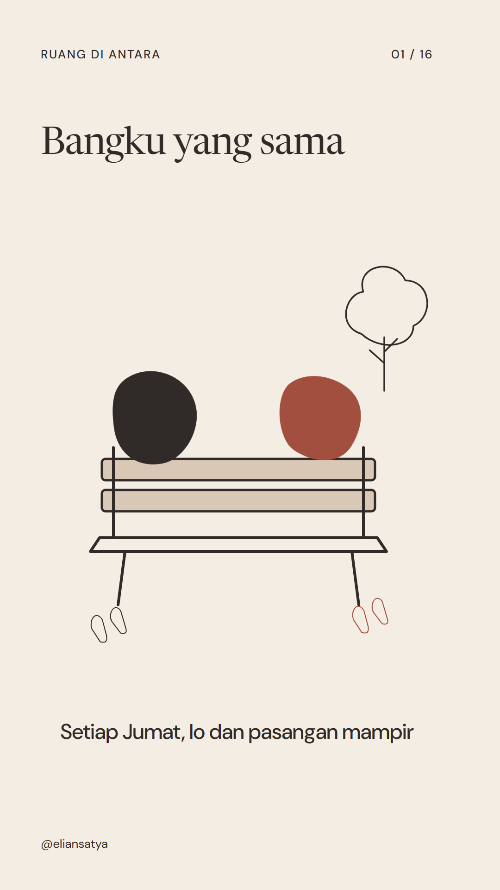
Setiap Jumat, lo dan pasangan mampir ke bangku taman yang sama. Kenapa kebiasaan sederhana itu terasa spesial?
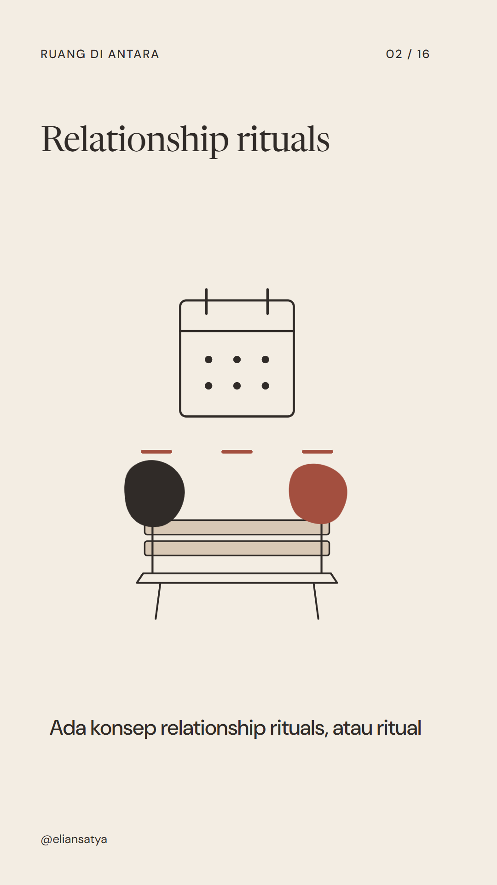
Ada konsep relationship rituals, atau ritual dalam hubungan.
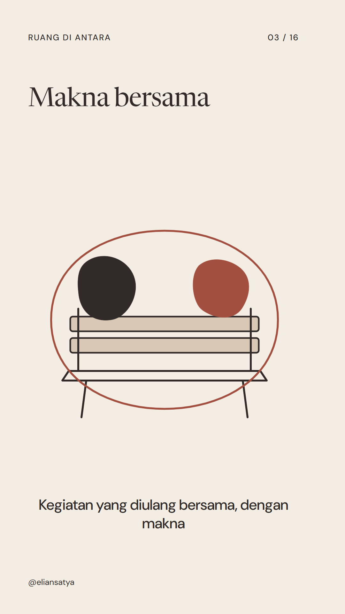
Kegiatan yang diulang bersama, dengan makna simbolis buat kalian berdua.
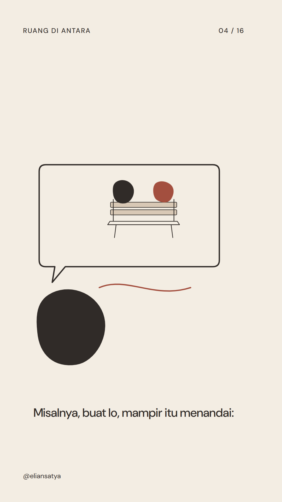
Misalnya, buat lo, mampir itu menandai: akhirnya kita punya waktu sendiri.
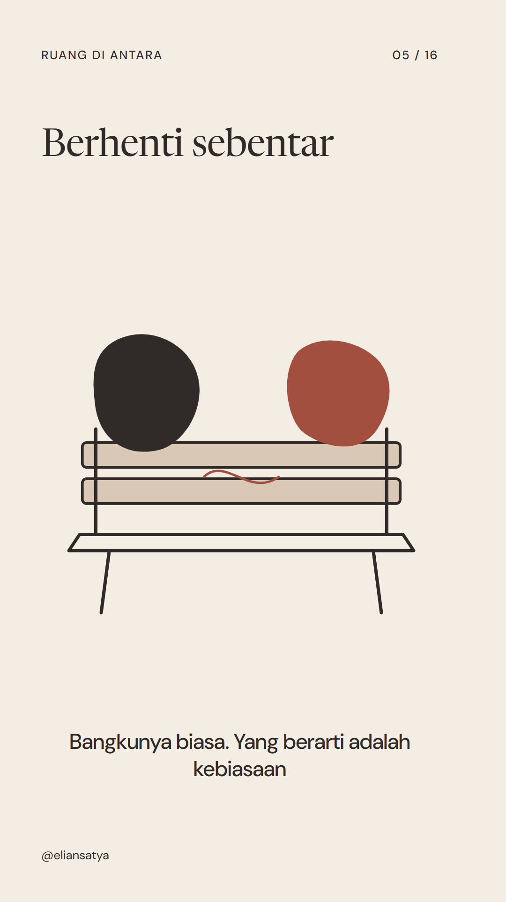
Bangkunya biasa. Yang berarti adalah kebiasaan kalian berhenti sebentar dan saling menemani.
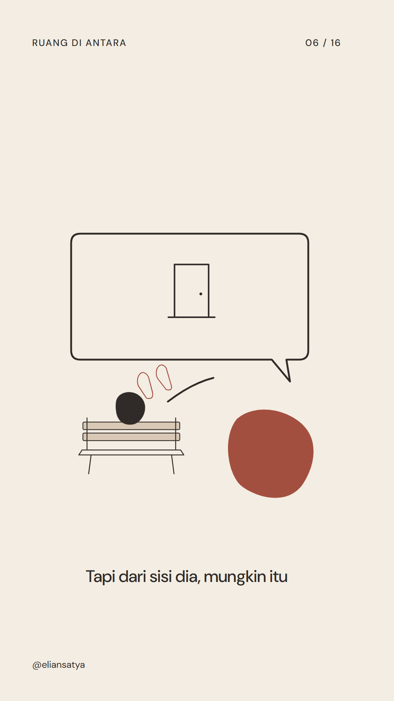
Tapi dari sisi dia, mungkin itu cuma tempat istirahat sebelum melanjutkan perjalanan.
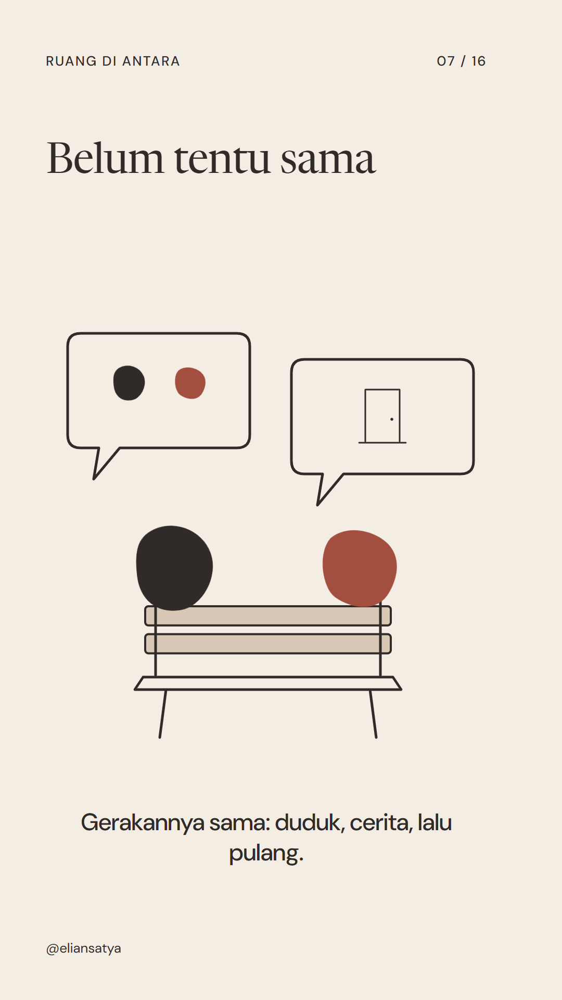
Gerakannya sama: duduk, cerita, lalu pulang. Maknanya belum tentu sama.
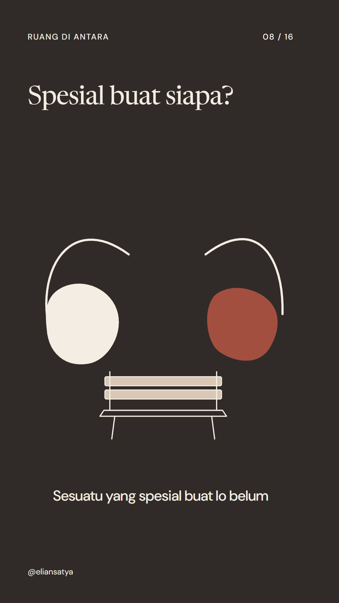
Sesuatu yang spesial buat lo belum otomatis jadi ritual bersama.
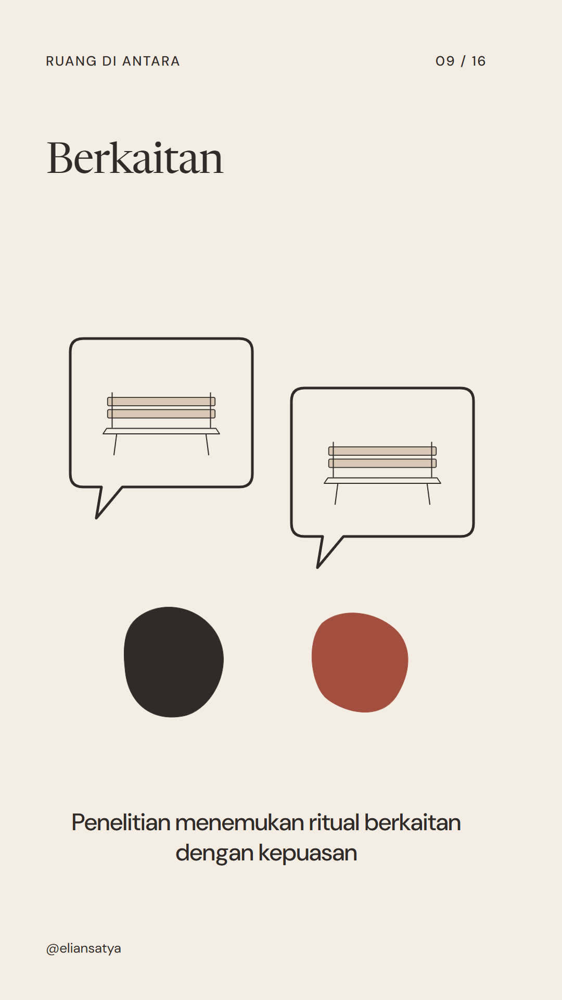
Penelitian menemukan ritual berkaitan dengan kepuasan hubungan, terutama ketika kedua pasangan sepakat memilikinya.
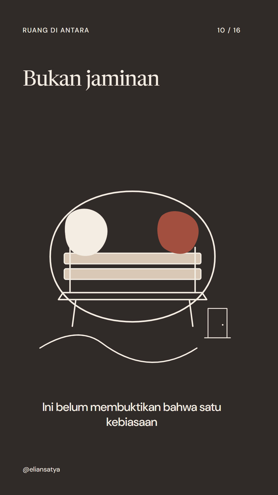
Ini belum membuktikan bahwa satu kebiasaan pasti bikin pasangan lebih bahagia.
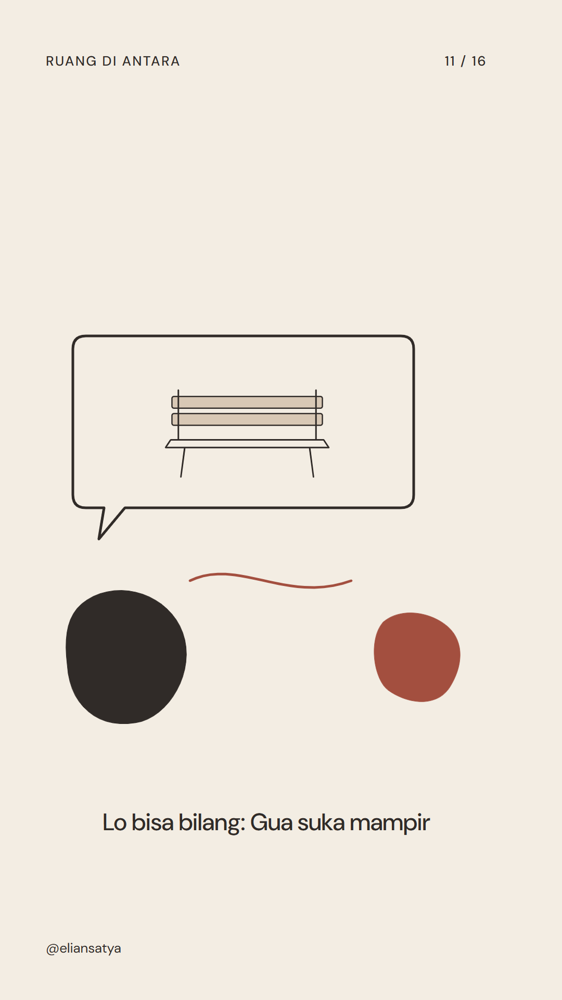
Lo bisa bilang: Gua suka mampir di sini. Rasanya kita punya waktu sendiri.
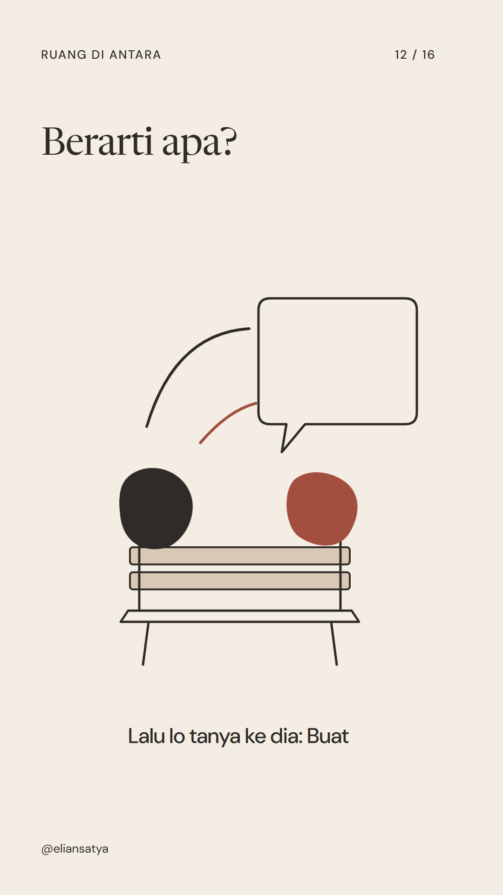
Lalu lo tanya ke dia: Buat lo, momen ini berarti apa?
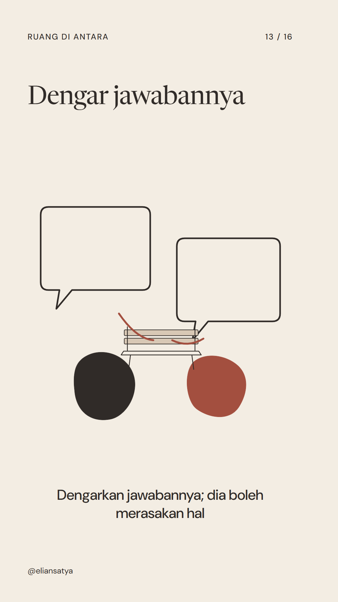
Dengarkan jawabannya; dia boleh merasakan hal berbeda. Cari bagian yang kalian nikmati bersama.
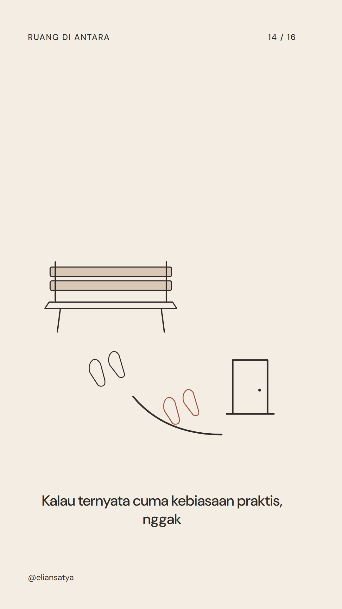
Kalau ternyata cuma kebiasaan praktis, nggak perlu dipaksa jadi simbol kedekatan.
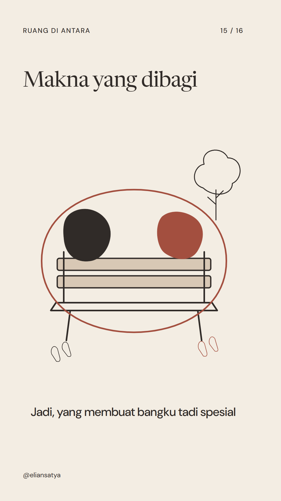
Jadi, yang membuat bangku tadi spesial bisa jadi makna yang kalian bagi.
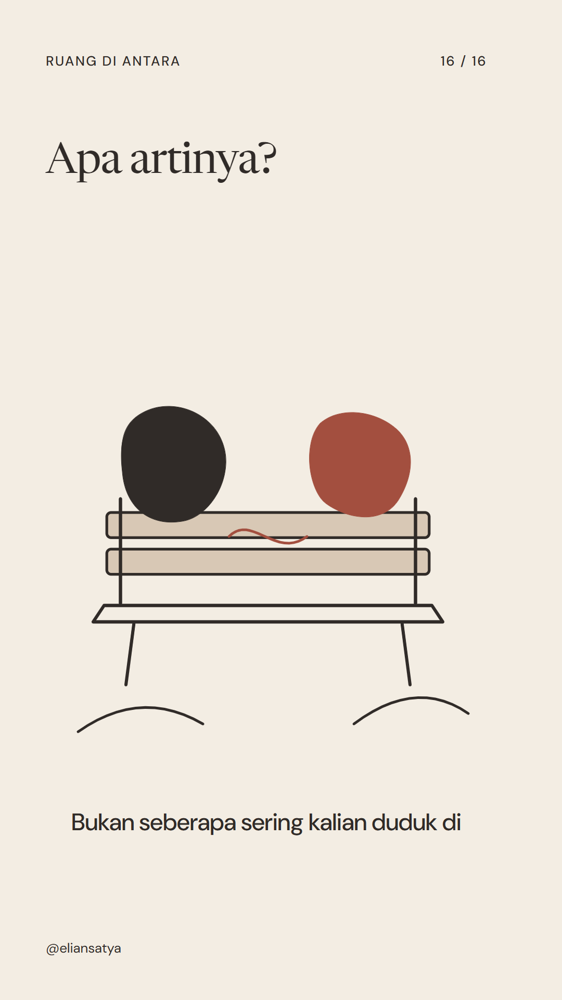
Bukan seberapa sering kalian duduk di sana, tapi apa artinya buat kalian berdua.